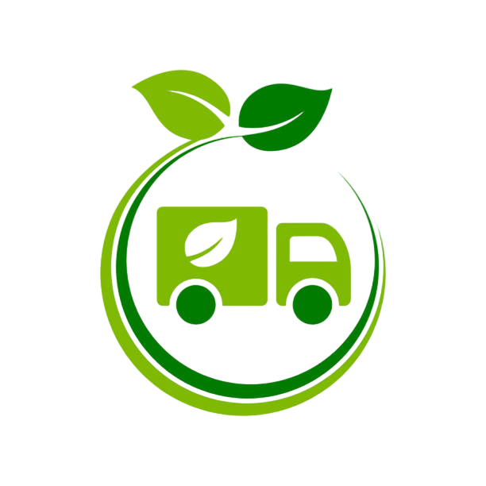
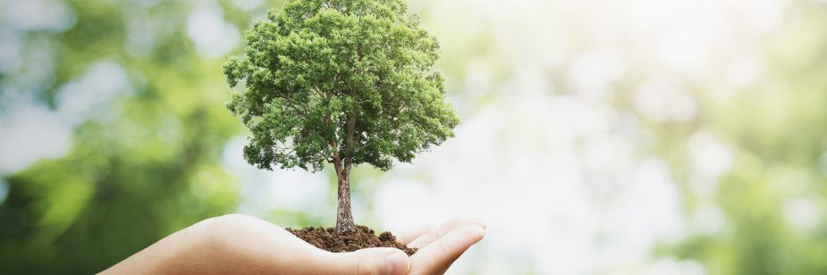
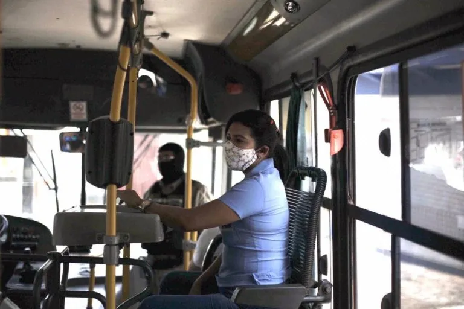
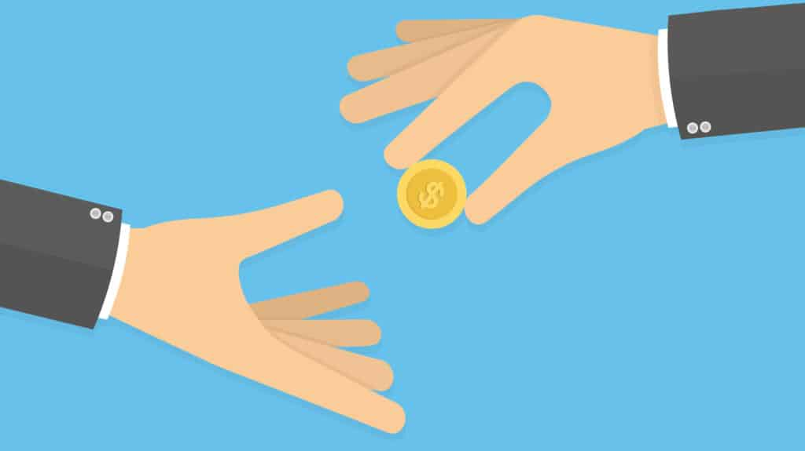

Desenvolvimento Sustentavel
As tarifas são pagas para o transporte público, usadas para manutenção e Infraestrutura.
Em cada cidade é cobrado diferente valor, recentemente com a pandemia e o aumento de óleo diesel, as tarifas tiveram reajustes.


Os subsídios são usados para complementar os valores, além do que são obtidos nas tarifas.usados para qualidade de serviços como o custeio de benefícios sociais, gratuidades para idosos, estudantes e pessoas com deficiência. O dinheiro do subsídio vem do próprio povo, é do recurso publico.
O dinheiro é usado da melhor forma, para haver mais frotas, e com isso menos carros e motos, evitando acidente.